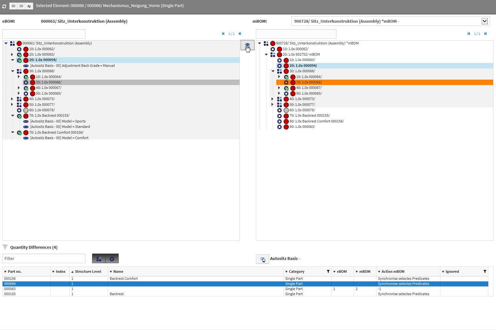

What’s new in Version 10.2.0¶
mBOM - Manufacturing BOMs¶
With the version 10.2 you can build manifacturing BOMs (mBOM) from engineering BOMs.
Manufacturing BOMs can be build either manually or by copying an engineering BOM.
The latter is achieved through the new function Create Manufacturing View.
With it the assembly together with its bill of materials is copied, the new
assembly is marked as an mBOM and has a reference to the originating eBOM.
Afterwards you can manually adjust the manufacturing BOM. You can also replace
used engineering BOMs with the function Replace by Manifacturing View.
Like before this will generate an mBOM and replace the corresponding BOM position.
Notice that eBOM and mBOM do not have to be in any way symmetrical. I.e. there has to be no correspondance between subassemblies. This requires special tools for the initial construction of an mBOM and for transporting changes from the eBOM to the mBOM.
The new mBOM Manager helps the user executing these tasks.
The difference table allows you to identify differences between the eBOM and
the mBOM thus securing the completeness of the mBOM.
mBOM Manager
The new mBOM functionality must be separately licensed.